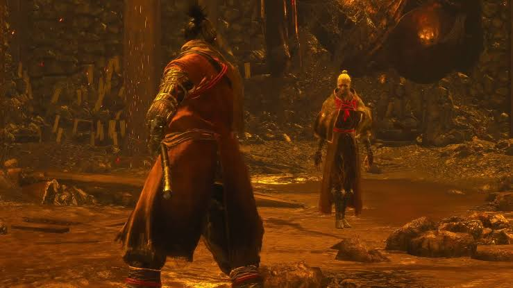
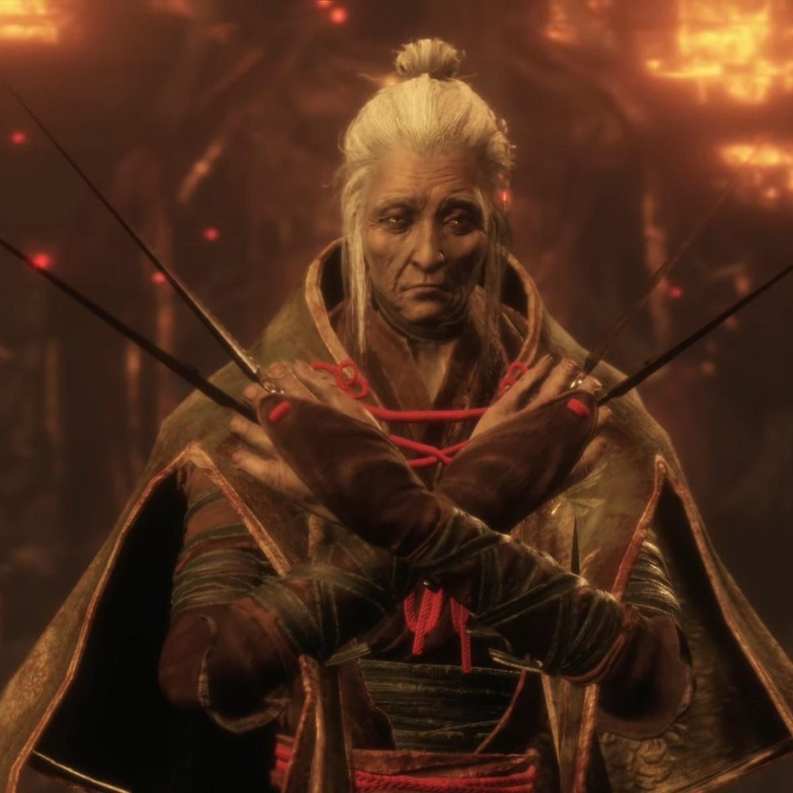
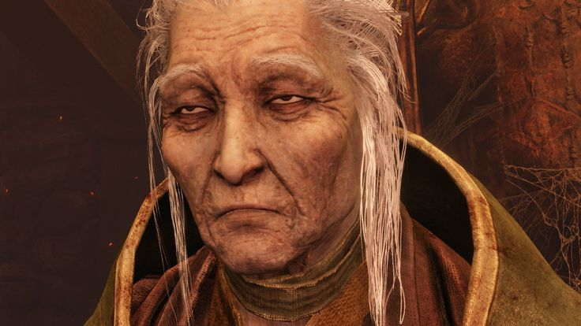
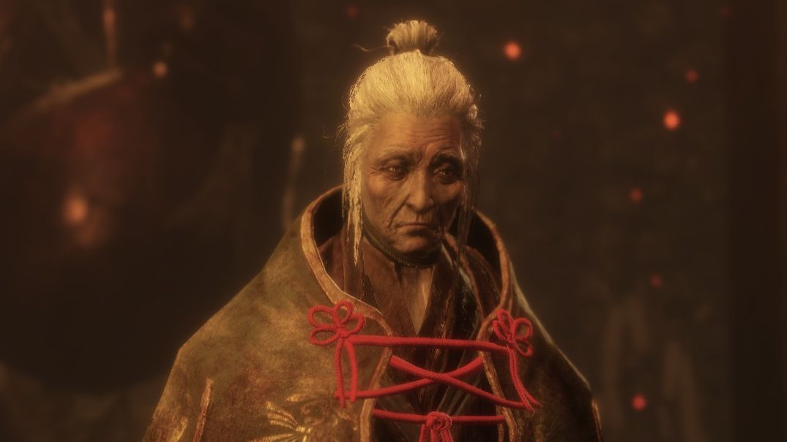
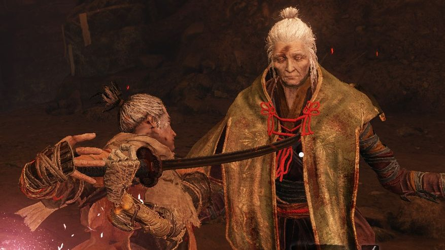
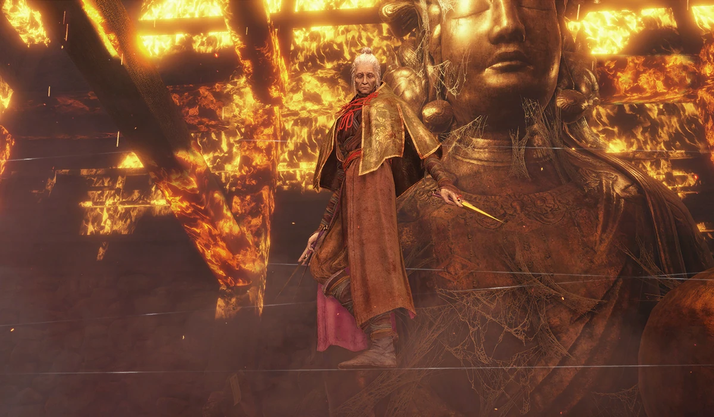
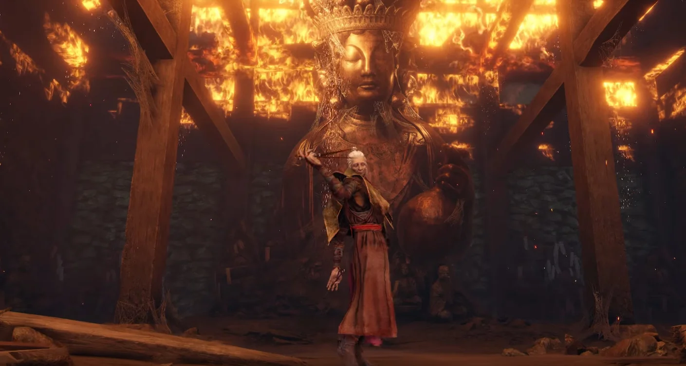
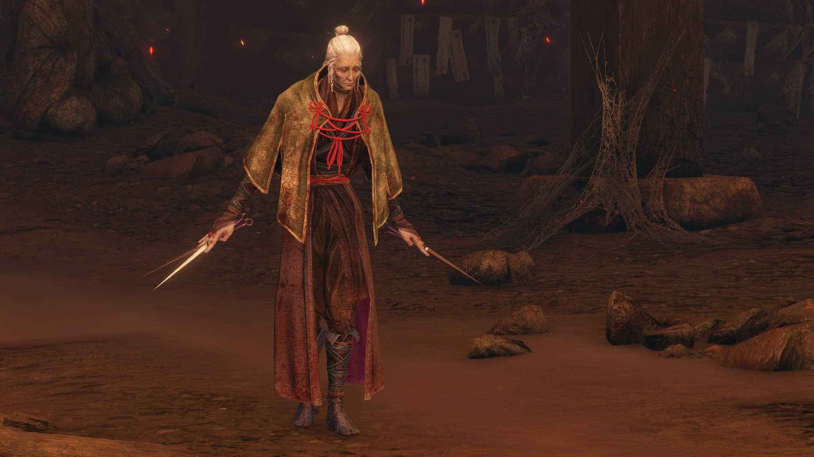

Lady Butterfly's Stats
- Name: Lady Butterfly
- Location: Hirata Estate memory
- Required Deathblows: 2
- Nearest Idol: Hirata Audience Chamber Idol
- Fighting Style: Agile, acrobatic, illusion-based shinobi combat
- Weakness: Shurikens
- Rewards: Memory (Permanently increases Wolf's attack) and a Sakura Droplet
"You were still just a puppy"
Who is Lady Butterfly?
Lady Butterfly is a non-mandatory boss located within the Hirata Estate Memory. In order to fight her, the player must advance through the memory and defeat Juzou the Drunkard, who is blocking the path. After that, the path should be clear for Wolf to fight one of his former mentors.
She is a master kunoichi, illusionist, and, as i previously said, one of Wolf's childhood mentors. She uses invisible wires stretched across the arena to leap, balance, and reposition, allowing her to stay airborne, escape pressure, or charge aerial attacks.
The old lady acts a a "skill check" to the player. Fighting her while still struggling to deflect common enemies, such as the Ashina Soldiers, can lead to frustration and countless deaths. This boss fight feels like a cinematographic dance between sensei and student. It is all about rhythm.

Lady Butterfly's lore and motivations to fight
The events at Hirata Estate are shrouded in mystery. Three years before the game's main events. the estate was attacked by bandits led by Owl. Lady Butterfly was found in the Hidden Temple, guarding Kuro, the Divine Heir.
Why she fought her student is a subject of debate within Sekiro's fanbase. Some believe she was testing his skills, ensuring he was strong enough to protect Kuro. Others suggest that she was under the influence of an illusion, or perhaps bounded by a pact of immortality that forced her hand.
The Sakura Droplet she drops is a key piece of evidence. According to legend, this pink crystal falls when a pact of immortality is formed. This suggests a deep, perhaps binding, connection to Kuro. Her final words to Wolf, "You've... gotten stronger", feel less like a villain's defeat and more like a mentor's final lesson.
Was she a traitor cooperating with Owl? The game leaves this answer to the player. What is certain is that she was a master of illusions, and perhaps the greatest illusion of all was the one that made Wolf see her as an enemy.
This ambiguity left by From Software was certainly intentional. After all, that is what keeps communities alive and engaged. A story that leaves nothing to debate is destined to be forgotten. The real magic happens when the player stops being a passive consumer and becomes part of the narrative.

How hard is to defeat Lady Butterfly? (Tips)
Lady Butterfly can be a tough opponent depending on when you fight her. She is not a mandatory boss, so you can progress through the story and come back to her later. If you fight her early, she can be a very punishing opponent, as she demands quick reflexes more than Gyoubu, the first mandatory boss.
The fight feels more like a choreographed dance. Once you understand the rhythm and use shurikens at the right time to make her fall, you should be in control of the battlefield. She becomes a real problem in her second phase, as she starts using illusion techniques to create some illusory foes and, after a few seconds, they turn into phantom butterflies that fly toward you.
Surpassing a tough boss like her is all about patience. She punishes greed and rewards precision. Do not hesitate, but do not rush. Deflect, counter, throw shurikens to make her fall and strike when the opening appears. When she starts her illusion phase, use a Snap Sedd to instantly dispel the ghost or hide behind the pillar.
Keep in mind that although snap seed can be used to dispel her illusory foes, it is not an item that can be easlity farmed. You can purchase them infinitely after defeating the True Corrupted Monk, but it is unlikely you will have access to that merchant before the fight, since she is one of the earliest bosses you can face. You might find a single Snap Seed from a helpful NPC just before the fight, but remember to use it wisely.

Phantom Kunai
Lady Butterfly's Gallery





